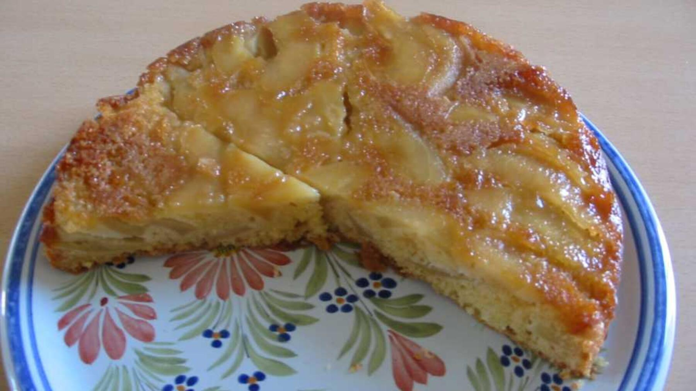

Zurück zur Übersicht
Saftiger Apfelkuchen mit Apfelsaft-Pudding
Mürbeteigboden mit Apfelstücken in einem Vanillepudding, der mit Apfelsaft statt Milch gekocht wird. Eine Portion entspricht einem Stück.
- Zeit
- 1 Std. 35 Min.
- Schwierigkeit
- leicht
- Kategorie
- Süßgebäck
- Ernährung
- vegetarisch
Zutaten
Portionen
Für den Mürbeteig
- 100 gZucker
- 1 PackungVanillezucker
- 1 PriseSalz
- 1Ei
- 100 gMargarine
- 200 gMehl
- 1 TLBackpulver
- Margarine für die Form
Für den Belag
- 4Äpfel (evtl. 5, je nach Größe)
- 0,75 lApfelsaft
- 70 gZucker
- 2 PackungVanillezucker
- 2 BeutelPuddingpulver Vanille
Zubereitung
- Für den Teig Zucker, Vanillezucker, Salz, Ei und Margarine cremig rühren. Dann Mehl und Backpulver unterrühren, am besten mit den Knethaken.
- Den Teig in den Kühlschrank stellen, damit er beim Verarbeiten nicht zu sehr klebt. Eine Springform (26–28 cm) einfetten.
- Für den Belag die Äpfel schälen und in kleine Stücke schneiden.
- Den Apfelsaft in einem großen Topf erhitzen, dabei etwa ⅛ davon im Messbecher zurückbehalten und darin Puddingpulver, Vanillezucker und Zucker glatt rühren.
- Wenn der Saft kocht, den Topf vom Herd nehmen, das angerührte Puddingpulver einrühren und unter ständigem Rühren noch einmal kurz aufkochen. Sobald der Pudding eindickt, den Herd ausschalten, die Apfelstücke unterrühren und beiseitestellen.
- Den Teig in die Form drücken, die Apfel-Pudding-Masse einfüllen und bei 150 °C Umluft auf mittlerer Schiene etwa 60 Minuten backen. Ist er noch zu blass, ein paar Minuten länger im Ofen lassen.
Meine Ergänzung: Im Belag maximal 70 g Zucker statt der gedruckten 175 g.
Hinweis: Die 95 Minuten gelten ohne die etwa 4 Stunden Ruhezeit.